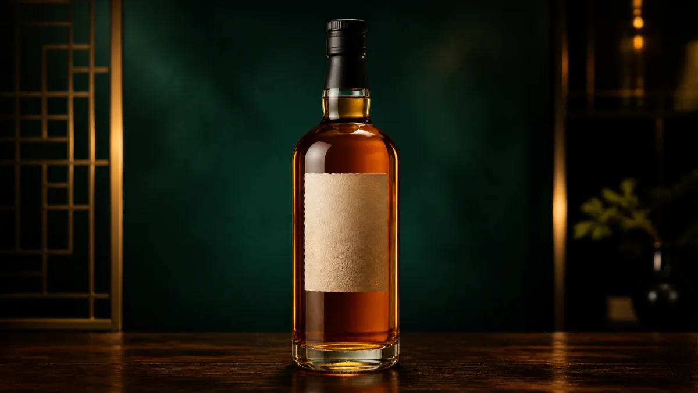
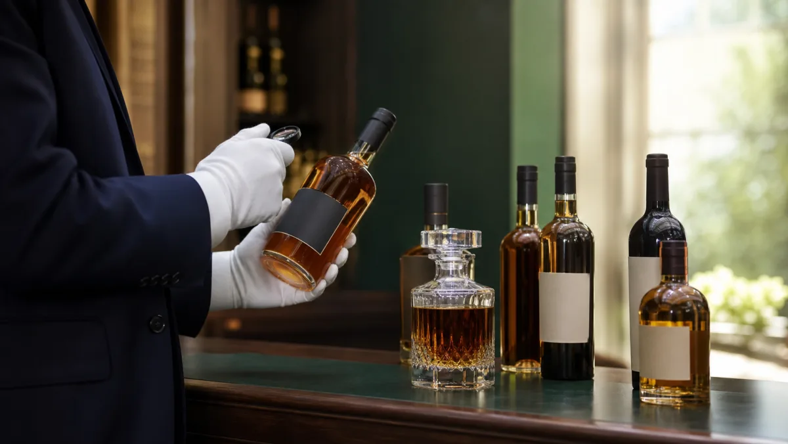
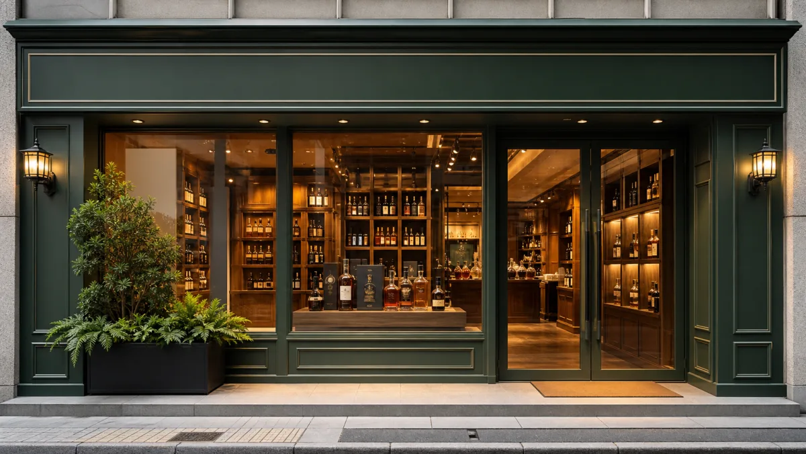

店舗買取
その場で査定、即日現金化。予約なしの持ち込みも歓迎します。
WHISKY · BRANDY · WINE
専門の鑑定士が一本ずつ丁寧に見極め、相場と独自の販路で高価買取。査定・出張・キャンセルはすべて無料です。

PURCHASE STYLE
ご都合に合わせて、店頭・宅配・出張から選べます。
その場で査定、即日現金化。予約なしの持ち込みも歓迎します。
送料無料の宅配キットをお届け。遠方でもまとめて査定できます。
本数が多い、重くて運べない場合も専門スタッフが伺います。
WHY CHOOSE US
ジャパニーズウイスキー、ヴィンテージワイン、古いブランデーまで、国内外の相場をもとに一点ずつ評価。箱や冊子の有無、保管状態、流通量まで含めて査定します。
相場連動の高価買取需要が高いタイミングを逃さず価格に反映。
LINE査定は最短10分写真を送るだけで目安金額をご案内。
状態不問で相談可能ラベル傷み・箱なし・古酒もまずは拝見します。

HIGH PRICE
特に高価買取中の銘柄です。お持ちの方はぜひご相談ください。
CATEGORY
下記以外のお酒も幅広く買取しております。
RESULTS
CONTACT
査定・出張・キャンセルは無料です。売れるかわからないお酒もお気軽にご相談ください。
BEGINNER GUIDE
査定から現金化までの流れと、ご準備いただくものをご案内します。
LINE・電話・フォームからご連絡ください。写真だけでもOKです。
専門鑑定士が一点ずつ確認し、査定額の根拠もご説明します。
ご納得いただいてから買取成立。店頭・出張はその場で現金化。
PRICE LIST
状態・付属品・相場により変動します。記載のない銘柄もお気軽にお問い合わせください。
COLUMN
買取のコツやお酒の知識、お役立ち情報を発信しています。
FAQ
査定・買取方法・お支払いについて、よくいただく質問をまとめました。
STORES
全国の店舗でお持ち込み買取を承っております。出張・宅配買取は全国対応です。
ACCESS
